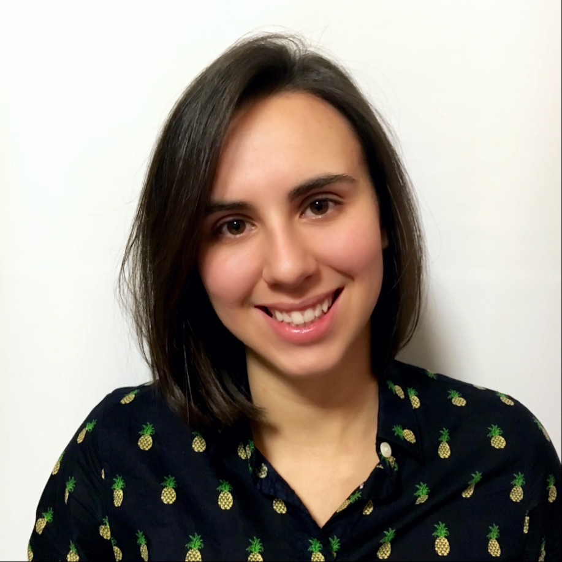
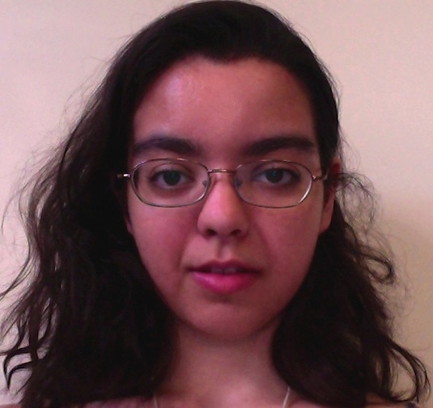
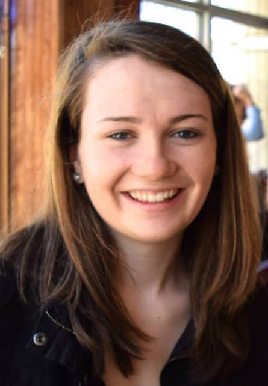

Karina Bercan

Karina is a third-year Computer Science major. Her areas of interest include human-centered computing and accessibility.
In the summer of 2015, she researched and applied concepts of usability during an REU at Louisiana State University. In the summer 2016, she completed an REU in Accessible Multimodal Interfaces, researching access technology for d/Deaf and hard-of-hearing users. This school year, she's looking forward to exploring speech understanding and prosody.
She divides her spare time between rowing for the Simmons College Varsity Crew Team and leading organizing efforts for Simmons' second annual, women-centered hackathon SharkHack.
Emily Chicklis

Emily is a third-year Psychology and Biostatistics major with a minor in Computer Science. Her goal is to combine the human focus of psychology with strong computing skills and a quantitative background.
In the summer of 2016, she participated in the Summer Institute in Biostatistics at the University of Minnesota. The program centered on regression models and the development of clinical trials, as well as analyzing data in SAS. Her coursework in statistics has also placed much emphasis on programming in R, in addition to courses in Python and Java.
She is new to computational linguistics, and is very excited to begin working on this new project with Karina, Sara, and Professor Veilleux.
Sara Harland

Sara is a fourth-year Neuroscience & Behavior major with minors in Public Health and Health Care Management. Her interest is cognitive psychology with a focus on speech including the treatment of speech issues and delays.
During the 2015-2016 academic year, Sara researched the effect of prosody on speech understanding. She is looking forward to continuing research on intonation and speaker commitment and exploring the role of cognitive psychology in this field of study.
Sara is also a member of the Simmons Cross Country team and is looking forward to working with her team to continue research in this new and exciting field of study.